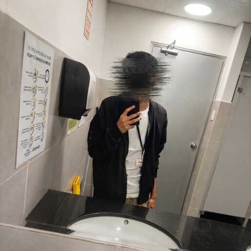

Hola, soy Walter
Si no existe, lo creo.
Si existe, lo mejoro.
Un poco sobre mí
Avanzo con una curiosidad constante y un interés real en entender cómo y por qué funcionan las cosas. Me gusta ir a fondo, aprender con intención y construir sobre bases sólidas, no sobre suposiciones. Prefiero el progreso constante al ruido rápido, y valoro tanto el error como el acierto, porque ambos enseñan. Busco crecer, mejorar procesos, y pensar con claridad antes de actuar.
No me interesa hacerlo perfecto a la primera, me interesa hacerlo bien y aprender en el camino. Mantengo la calma, disfruto el análisis, y creo en avanzar paso a paso, pero sin detenerme.
Lo que me impulsa
La curiosidad me acompaña como una especie de motor silencioso. No busco saberlo todo, pero sí entender lo suficiente para avanzar con sentido. Me mueve esa mezcla de paciencia y ambición tranquila que aparece cuando algo vale la pena trabajar.
Disfruto descubrir caminos nuevos, cuestionar lo establecido y encontrar formas más claras y eficientes de hacer las cosas. Aprecio el progreso real, el que no necesita mostrarse de inmediato porque se nota con el tiempo.
Pilares
- Curiosidad
- Rigor
- Progreso real
- Intención
- Constancia